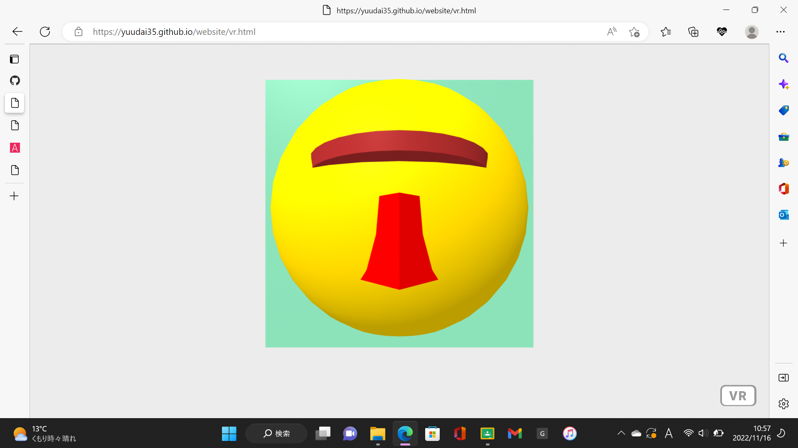
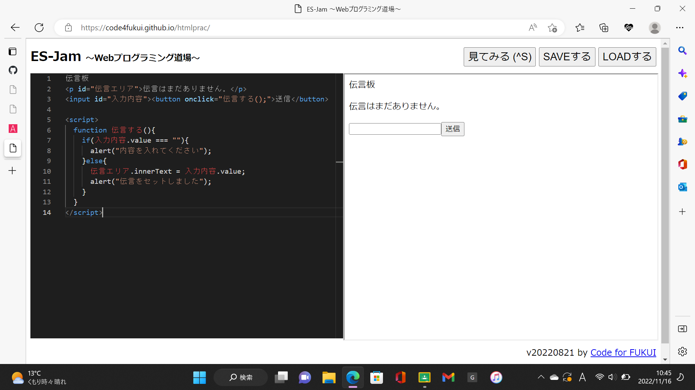

第3週目
3-1 JavaScript体験：VR空間を作る

VR空間
1.内容
VR空間で、自分のオリジナルの3次元モデルを作った。
2.感想
僕は、モアイ像を意識して3次元モデルを作った。特に鼻の部分をこだわって、微妙な角度や、奥行き、大きさなどを丁寧にしないと思っていたのと違うものになるから気をつけようと思った。
3-1 JavaScript体験：伝言プログラムを作る

伝言板
1.内容
JavaScriptで、伝言プログラムをし、伝言板を作った。
2.感想
自分で、手順を見ながら作っていって、途中で分からなくなったりしたが、自分で解決したり、友達に聞いたりして、最終的には、伝言板を完成できたので良かったです。
3-2 JavaScriptプログラムの３次元空間の体験
1.内容
VRを使って、3次元空間でボールを投げたり、物を運んだりした。
2.感想
前回の二週目でもVRは使ったが、それとは違い、自分でアクションを起こす体験をし、そがれとても面白かった。